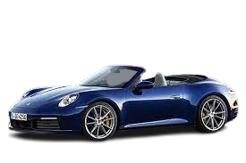
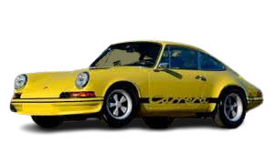
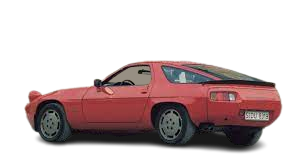
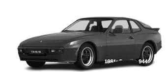

A história da Porsche
A história da Porsche começa em 1948, quando a montadora alemã apresentou seu primeiro carro de produção em série, o Porsche 356. Desenvolvido a partir de um protótipo projetado por Ferdinand Porsche em 1939, o 356 era um carro esportivo com um motor boxer de quatro cilindros e 1,1 litro que gerava uma potência de 40 cavalos.
O Porsche 356 foi um sucesso imediato, tanto nas corridas quanto nas vendas. Com um design aerodinâmico e elegante, o carro conquistou uma legião de fãs e se tornou um ícone do automobilismo mundial. Ao longo dos anos, o modelo passou por diversas evoluções, com novos motores, carrocerias e tecnologias.
O Porsche 356:

Em 1963, a Porsche apresentou o lendário 911, que se tornou um dos carros mais icônicos da história da indústria automotiva. Desenvolvido por Ferdinand Alexander Porsche, neto de Ferdinand Porsche, o 911 tinha um motor boxer de seis cilindros e 2,0 litros que gerava uma potência de 130 cavalos. Com um design revolucionário e tecnologia avançada, o carro se tornou um sucesso imediato e é produzido até os dias de hoje, em diversas versões e modelos.
Ao longo das décadas, a Porsche continuou a inovar e desenvolver novos modelos de carros esportivos, como o 914, o 924, o 944 e o 968. Em 1996, a montadora lançou o Boxster, um carro esportivo de motor central que se tornou um grande sucesso de vendas.
  Hoje, a Porsche é uma das marcas mais admiradas e respeitadas do mundo automotivo, com uma história de inovação, paixão e excelência que continua a inspirar gerações de fãs e entusiastas de carros esportivos.